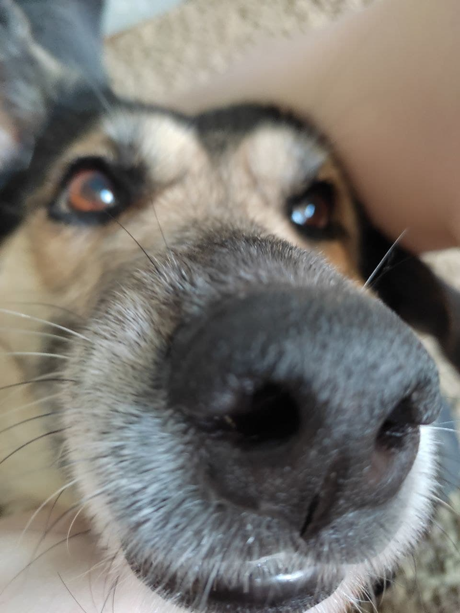
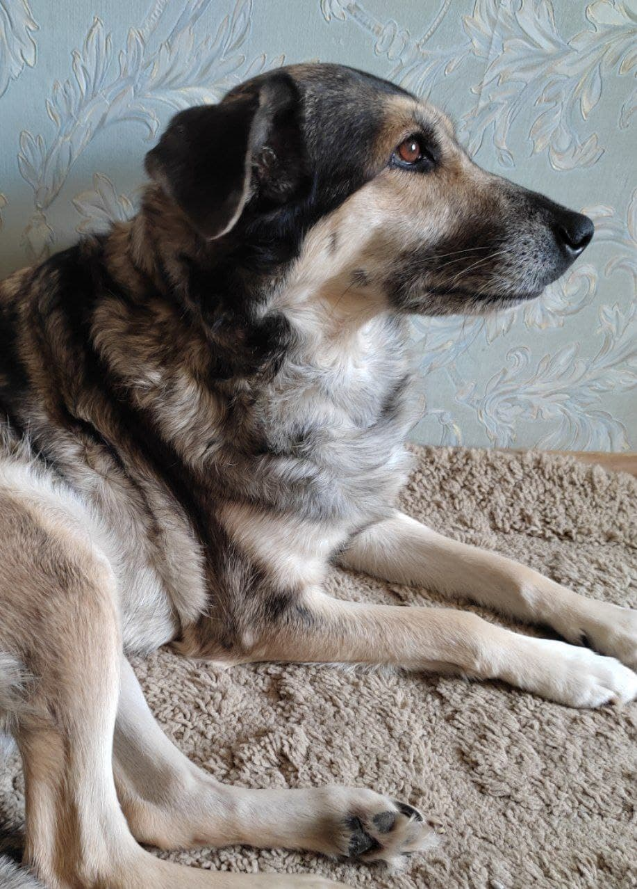
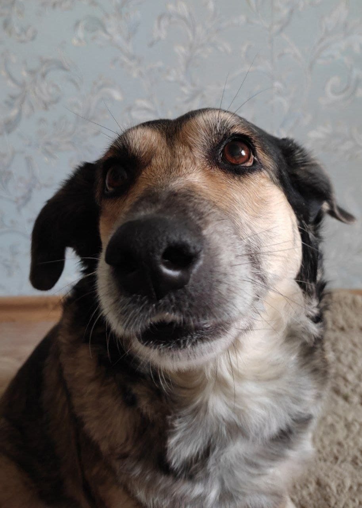

У меня есть домашний питомец - это моя собака Найда. Она очень жизнерадостная и веселая, ласковая и добрая, любит много внимания и иногда ведет себя почти как кошка.
Моя собака :)

Несмотря на то, что у меня уже есть собака, я бы хотела завести еще одну. Так как Найда беспородная, вторую собаку мне бы хотелось моей любимой породы - доберман.

Ее история
Изначально мои родители не хотели заводить собаку - некому будет гулять, я не справлюсь. Однако спустя несколько моих просьб и уговоров, они все же согласились. Так у нас и появилась Найда. (Продолжение по ссылке!)
